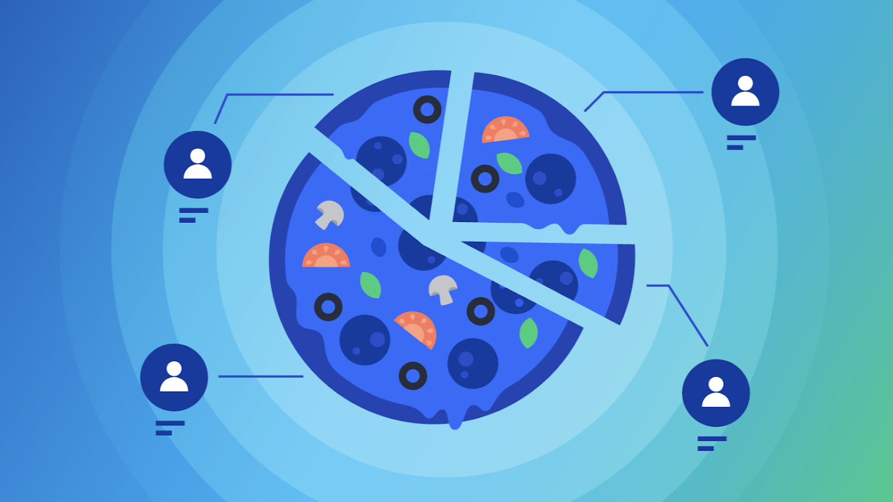
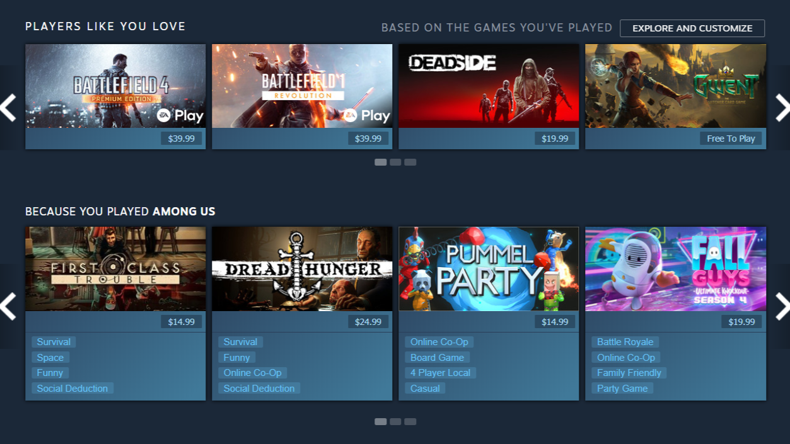
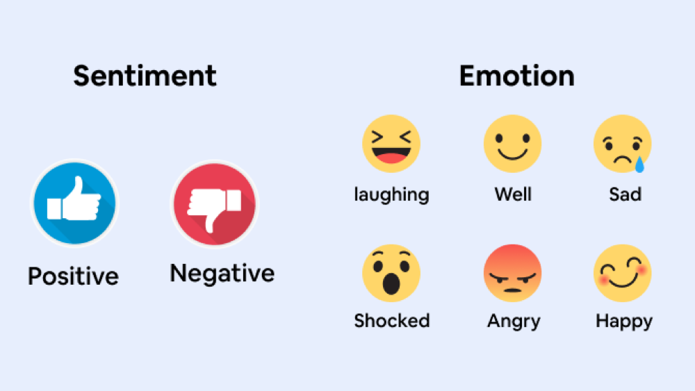
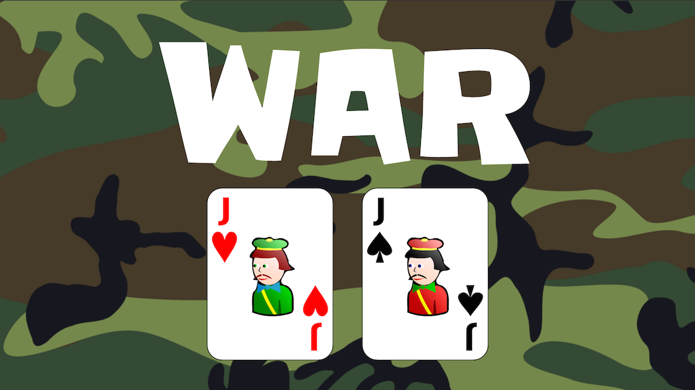
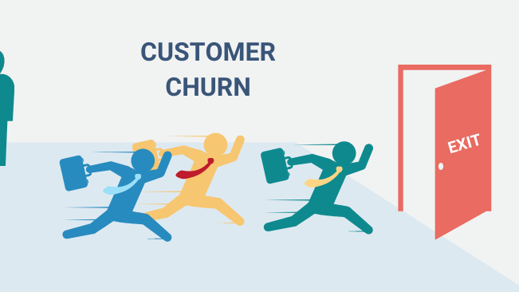
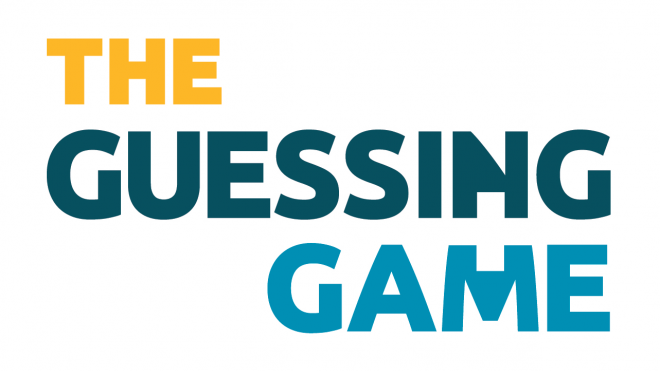

Platform: MS SQL Server, PowerBI
This project aims to provide real-time insights into the performance of the Locale Pizzeria so that they can monitor their operations and take action based on the metrics. The project consists of a total of three phases - 1. Extracting the data, creating tables, and importing the data inside those tables; 2. Develop custom queries to identify KPIs; 3. Building Interactive Dashboards using the data and the queries.
Platform: Power BI
In this analysis, I aim to analyze the biggest shareholders of the Canadian cannabis market, how has been their month-over-month performance and what are some of the factors that are responsible for the growth in their market share. I also aim to analyze two of the biggest competitors in the industry - ROSE LifeSciences and Tilray - to see what influence do they have on each other and on the whole cannabis market.
Platform: Tableau Public
I prepared an interactive dashboard on Tableau public using the Washington, USA House Prices data for one year. This Tableau dashboard provide insights on the housing situation in Washington, USA, including the daily price changes for one year, the variety of houses that are available in that area, and how the other factors (like bedrooms, bathrooms, sqft living, condition, etc.) affect the housing price changes in the area.

Platform: Python
A Recommendation System developed using Python for Video Games Search on Steam Platform. This project uses the 'difflib' library and 'Cosine Similarity' algorithm to provide recommendations to users based on their search criteria.
Platform: Python
Using Python, we developed an optimization model that incorporates some of the present supply chain constraints and determines the optimal plant and port for each order type. This would eventually provide optimized transportation costs for the company

Platform: Python
The primary objective of this project is to design and implement a robust full-stack text-mining strategy, developed in Python, that can effectively filter existing reviews into distinct positive and negative categories, thereby facilitating the classification of new reviews into these predefined segments.

Platform: Python
This game is made using Python programming language and uses Jupyter notebook as its platform. It involves the use of random library and involves defining different class, namely Player, Card, Deck, and Discard classes. Each class can be used individually and also as part of the other classes.

Platform: Tableau
This project presents a comprehensive analysis of the "Telco Customer Churn" dataset within the telecommunications industry. The central objective of this analysis is to determine the main reason for customer churn, a critical challenge impacting revenue streams, market positioning, and overall sustainability.

Platform: Python
This game is made using Python's 'random' library and mainly focuses on the usage of 'while' loop and 'if - elif - else' conditional statements. It is just a one turn game which will tell you if you guessed a number that is close to the random number picked up by the game or the number is far away from the random number.